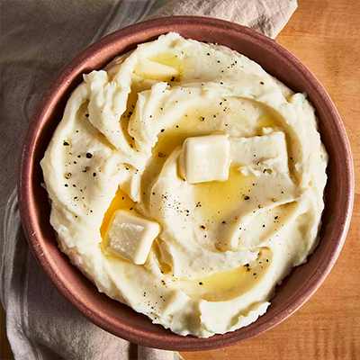

Basic Mashed Potatoes

Description
If you love good, old-fashioned mashed potatoes, this is the perfect recipe. Made with Idaho potatoes, milk,
butter, and optional garlic, this go-to recipe for simple, homemade mashed potatoes is a classic holiday dish.
Learn how to make mashed potatoes that come out smooth, creamy, and delicious every time. Serve with gravy or
extra butter on top.
- 2 pounds baking potatoes, peeled and quartered
- 3 cloves garlic, peeled, or to taste (Optional)
- 1 cup milk
- 2 tablespoons butter
- salt and ground black pepper to taste
- Bring a large pot of salted water to a boil. Add potatoes and garlic, lower heat to medium, and simmer until
potatoes are tender, 15 to 20 minutes.
- When the potatoes are almost finished, heat milk and butter in a small saucepan over low heat until butter
is melted.
- Drain potatoes and return to the pot. Slowly add warm milk mixture, blending it in with a potato masher or
electric mixer until potatoes are smooth and creamy. Season with salt and pepper.
Back to Home